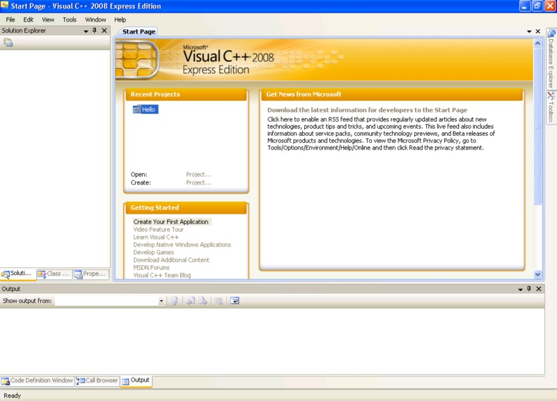
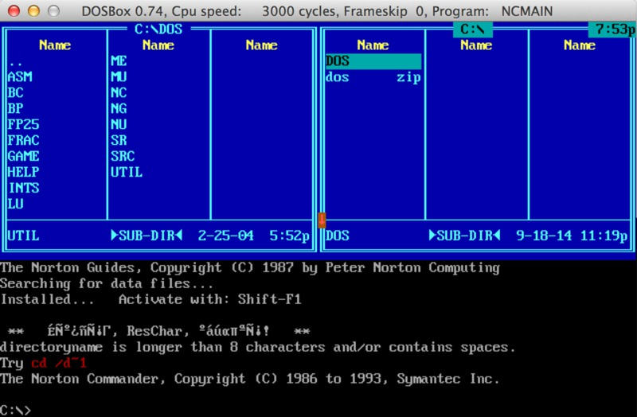
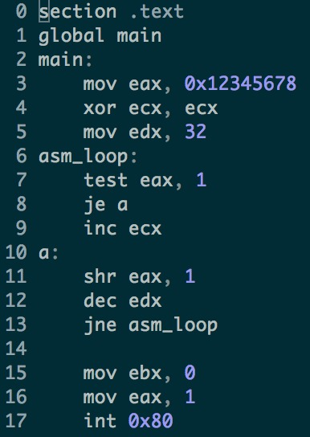

Введение в ассемблер. Основные инструкции. Ветвления.
Слайды
Windows
Dosbox (работает на всех платформах)
Linux
Смотрим что делают отдельные инструкции под Windows
Качаем OllyDbg 1.10 и распаковываем.
Запускаем OLLYDBG и выбираем File->Open
Открываем C:\Windows\NOTEPAD.exe

После этого нужно жамкнуть пробел чтобы вбивать инструкции.

Как только вы ввели всё что нужно закрываем окошко и жамкаем F8 чтобы исполнить одну инструкцию.
Пишем на ассемблере под Windows
Качаем и ставим Visual C++ 2008 Express Edition

Создаём проект, и добавляем .cpp/.c файл как будто вы хотите писать на C++/C. Теперь можно писать на ассемблере следующим образом.

Ставим брейкпоинт на начале ассемблерного кода и жамкаем F5
Исполнять инструкции по одной можно жамкая F11 (у меня так). При этом внизу в окошке "Autos" можно видеть изменения, происходящие с регистрами и переменными.
Смотрим что делают отдельные инструкции под Dosbox
Качаем и ставим Dosbox. Качаем DOS.zip и распаковываем его в C:\DOS\ (если вы на Windows) или в ~/DOS (если вы на Linux или Mac OS). В итоге у вас должен получиться следующий путь до файлов внутри архива -- C:\DOS\DOS\NC\NC.bat или ~/DOS/DOS/NC/NC.bat . Запускаем Dosbox.
Монтируем внешнюю директорию в Dosbox
mount C: C:\DOS либо mount C: ~/DOS
Затем переходим на диск C: с помощью команды C:
Запускаем в Dosbox DOS\NC\nc.bat

Запускаем в Dosbox td
Жамкаем Enter чтобы закрыть приветствие. Затем жамкаем пробел и набираем нужные инструкции. К сожалению Turbo Debugger написан под 16-битную архитектуру и не отображает 32-битные регистры (EXX), а только их младшие части. Но думаю этого достаточно чтобы попробовать большинство нужных нам инструкций.
Как только вы ввели всё что нужно жамкаем F8 чтобы исполнять по одной инструкции.
Пишем на ассемблере под Dosbox
Делаем всё тоже самое из предыдущего раздела чтобы запустить DOS.zip под Dosbox
Жамкаем Shift+F4 чтобы создать файл, назовём его main.asm
Набираем код (всё остальное кроме кода это магия, просто перепечатайте). Исполнение начнётся с метки start
Выходим жамкая ESC
Ассемблируем: tasm main
Линкуем: tlink /t main
Если вы всё сделали правильно у вас должен появится файлик main.com
Исполняем в консоли td main и исполняем по инструкции с помощью F8
Смотрим что делают отдельные инструкции под Linux
К сожалению я (ld86) не знаю как просто и удобно попробовать поисполнять отдельные инструкции под линуксом :(
Если вы знаете как это сделать обязательно напишите об этом в рассылку!
P.S. Писать в gdb инструкции прям в память воще не вариант.
Пишем на ассемблере под Linux
Ставим с помощью вашего пакетного менеджера nasm
Пишем код

Ассемблируем и линкуем.
Запускаем gdb
Ставим брейкпоинт и запускаем программу.
Чтобы посмотреть код на ассемблере выполняем команду disas
Чтобы исполнить одну инструкцию выполняем команду ni
Чтобы посмотреть содержимое регистров выполняем команду i r